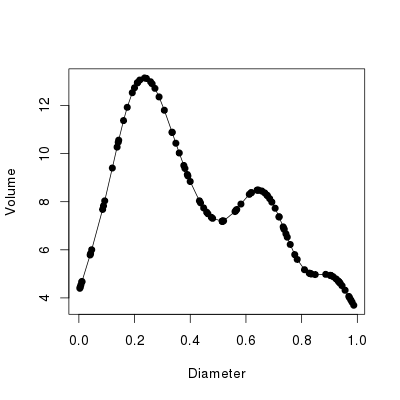
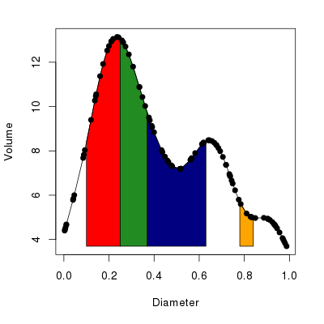
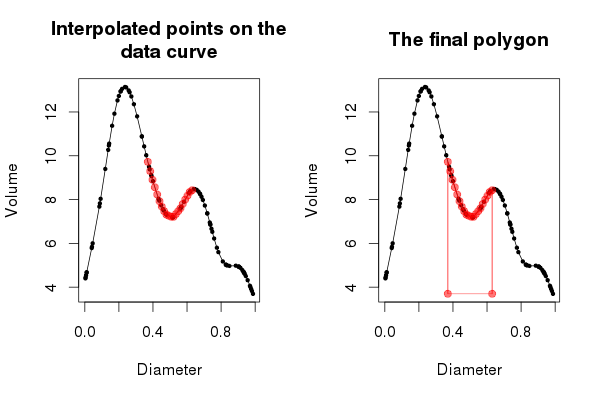

Shading regions under a curve
Over on the Clastic Detritus blog, Brian Romans posted a nice introduction to plotting in R. At the end of his post, Brian mentioned he would like to colour in areas under the data curve corresponding to particular ranges of grain sizes. The comment area on a blog isn’t really amenable to giving a full answer to the problem posed so I gave a few pointers. Other commenters also suggested solutions.
The problem is how to shade or colour in areas under a curve. The more general problem is how to do this when you don’t have any data that fall on the margins of the regions you wish to shade. Here is more solution to that more general problem.
As I don’t have Brian’s data lets generate some similar data with the help of the mgcv package
library(mgcv)
set.seed(2) ## simulate some data...
dat <- gamSim(1, n = 400, dist = "normal", scale = 2)
b <- gam(y ~ s(x2), data = dat)
set.seed(42)
newX <- with(dat, data.frame(x2 = sort(runif(100, min = min(x2), max = max(x2)))))
pred <- predict(b, newdata = newX)
bed <- data.frame(Volume = pred, Diameter = newX[,1])I’m not going to explain that as it is but a means to an end. The resulting data can be nicely plotted via
plot(Volume ~ Diameter, data = bed, type = "o", pch = 19)with the resulting plot shown in Figure 1, below.

To illustrate, let’s assume we want to shade the regions under the curve as defined by the following start and end points of four regions
from <- c(0.1, 0.25, 0.37, 0.78)
to <- c(0.25, 0.37, 0.63, 0.84)To cut to the chase, here is my solution to the problem:
polyCurve <- function(x, y, from, to, n = 50, miny,
col = "red", border = col) {
drawPoly <- function(fun, from, to, n = 50, miny, col, border) {
Sq <- seq(from = from, to = to, length = n)
polygon(x = c(Sq[1], Sq, Sq[n]),
y = c(miny, fun(Sq), miny),
col = col, border = border)
}
lf <- length(from)
stopifnot(identical(lf, length(to)))
if(length(col) != lf)
col <- rep(col, length.out = lf)
if(length(border) != lf)
border <- rep(border, length.out = lf)
if(missing(miny))
miny <- min(y)
interp <- approxfun(x = x, y = y)
mapply(drawPoly, from = from, to = to, col = col, border = border,
MoreArgs = list(fun = interp, n = n, miny = miny))
invisible()
}Don’t worry, I’ll explain all of that in a minute; first let’s see polyCurve() in use
cols <- c("red", "forestgreen", "navyblue", "orange")
with(bed, plot(Diameter, Volume, type = "o", pch = 19,
panel.first =
polyCurve(Diameter, Volume, from = from, to = to,
col = cols, border = "black")))The resulting plot should look like the one in Figure 2 below.

Now the nitty gritty. polyCurve() takes the x and y data points, the start and end points of the areas to be shaded in (arguments from and to), an option to override the minimum value on the y axis to which the shading will extend (can be missing), plus vectors of colours for the fill and border of each polygon drawn.
Lines 3–8 define an internal function drawPoly(), which will actually draw a single polygon over the region under the curve defined by its arguments from and to. The first argument to drawPoly() is fun, which is a function that returns values on the curve for a vector of locations in the x variable/axis. We’ll see how this function is derived later. Notice that we pass in here some of the arguments previously described that control the look of the polygons and how far down on the y-axis the polygon will be drawn (miny).
The first line of drawPoly() generates an equally-spaced sequence of n values over the range of the polygon on the x-axis. n defaults to 50 values but this can be changed if needed especially if the data in that region are very wiggly or the region quite wide. The next part of drawPoly() uses the polygon() function to actually draw the polygon. We pass it the x coordinate as the sequence of values just created, with the first and last points in the sequence repeated. The y coordinates are supplied as the output from fun() for the sequence of points, augmented at the start and end by the value of miny. And that’s it.
Lines 9–16 of polyCurve() do some sanity checking and house keeping
- First the lengths of
fromandtoare checked to see if they are equal - Then we check the lengths of the vectors of fill and border colours,
colandborderto see if these match up with the number of polygons to be drawn. If the lengths don’t match, we extend each vector to match the number of polygons to be drawn. This is a nice little feature that allows for a single colour to be supplied and havepolyCurve()still work. - Finally, we check to see if argument
minywas set by the user and if not we assign to it the minimum value taken byy.
The next line is where some R magic happens. Recall that drawPoly() takes a function as its first argument, which returns interpolated values along the data curve at specified x variable locations. This is where that function is created. approxfun() is one of those great little R functions that really saves a lot of time and coding. Essentially, approxfun() linearly (by default) interpolates a set of x and y coordinates. But crucially, and here is the kicker, it returns a function that, if given new locations for the x coordinate, will return interpolated values for the y coordinate.
Rather than interpolating the data curve for each region for which we want to draw a polygon, we interpolate the entire data curve with approxfun() and then reuse that function to generate the interpolated values we need when drawing each region’s polygon.
The last major piece of polyCurve() code is where we repeatedly call drawPoly(), once per region to be covered by a polygon. I could have done this part with a for() loop, iterating over the regions and calling drawPoly() with the appropriate from, to, col and border, etc. That would be relatively easy to do, but it is not really R-like. R provides a family of functions, known as the apply functions, which in many cases allow one to do away with an explicit for(). (Note that the loop is still there, it is just hidden away from view and in some cases done in compiled code rather than interpretted R code.)
We want to call drawPoly() for each combination of from, to, col and border. For this we need a the multivariate apply function mapply(). We pass mapply() the function we wish to repeatedly call. After this we give the arguments we wish to call our function with. mapply() will call our function once for each combination of these arguments. I.e. it will call drawPoly() with from[i], to[i], col[i] and border[i], where i takes the value 1, 2, 3, … in turn. The final part of our mapply() call is to pass some extra arguments needed for drawPoly(); these arguments don’t change with each polygon so they are supplied as a list object to the MoreArgs argument. Notice that I name the elements of this list using the name of the drawPoly() argument I want each element passed on to.
The final line is last bit of house keeping; polyCurve() returns nothing and does so invisibly.
Let’s return to the code we used to actually draw Figure 2 above
cols <- c("red", "forestgreen", "navyblue", "orange")
with(bed, plot(Diameter, Volume, type = "o", pch = 19,
panel.first =
polyCurve(Diameter, Volume, from = from, to = to,
col = cols, border = "black")))This is a fairly standard call to plot(). The none-standard part is the use of the panel.first argument. This is actually an argument of plot.default(), the default plot method. It takes an R expression, a bit of R code, that will be run after the plotting region has been defined and axes drawn, but crucially before the data for the plot are actually drawn. This is where we want polyCurve() to be run, so the coloured polygons end up being drawn underneath the actual data. This produces a nicer looking plot than having the polygons drawn over the top of the data.
It is worth noting that there is a corresponding panel.last argument which works the same way but is only run once all the other plotting is complete. A further point to note is that these two arguments work nicely when the default plot is called, but they can break when other plot methods are called first. Things break because the expression supplied to panel.first might end up getting evaluated (run) before any plotting has even taken place, because the argument is being evaluated in the wrong place (at the wrong time). At the very least, panel.first will have no effect, but it might raise an error in some situations.
So there we have it. Interpolating the data allows for a relatively concise solution to the problem of shading areas under a curve. It is a general solution not requiring one to have data at the boundaries of the regions to be shaded and as such doesn’t require any selection of data points within the region to draw the polygon through.
If you are still with me, it might be useful to visualise how drawPoly() and polyCurve() work, to see what each part of the process is doing.
First, set up a base plot onto which we can draw; this shows the data as before, but with the data points draw in a smaller size.
plot(Volume ~ Diameter, data = bed, type = "o", pch = 19, col = "black",
cex = 0.5, main = "Interpolated points on the\ndata curve")Next, use approxfun() to produce an interpolation function for the data
FUN <- with(bed, approxfun(Diameter, Volume))FUN() takes a single argument, the locations on the x variable for which interpolated y coordinates are to be returned, e.g.
> FUN((1:10) * 0.1)
[1] 8.394756 12.740232 12.004102 8.834530 7.239627 8.145023
[7] 7.831734 5.340844 4.948277 NA
Notice that NA is returned for values outside the range of the data; This is the default behaviour of approxfun(), which can be changed via argument rule, but we can’t get it to extrapolate beyond the range of the data.
Now, generate a set of x coordinates for the region of the curve we want to interpolate. Here I use the bit of the curve between the two peaks in the data.
Sq <- seq(from[3], to[3], length = 20)We use 20 values here, so the plot we will produce in a minute isn’t overly crowded, but the more values you draw over the region, the smoother the fit to the data curve itself. The interpolated values for this sequence of coordinates is given by FUN()
> FUN(Sq)
[1] 9.724055 9.300774 8.907145 8.565961 8.233448 7.924078
[7] 7.675439 7.471385 7.315091 7.263203 7.216052 7.210351
[13] 7.339273 7.468195 7.600860 7.801945 7.996272 8.180440
[19] 8.347901 8.429620
and we can draw these locations on the plot via a call to points(), giving it the x coordinates, Sq, and the output from FUN(Sq)
points(Sq, FUN(Sq), col = "#FF000088", pch = 19, type = "o")The points were drawn in red, with some alpha transparency so that the data and curve show through from underneath. The resulting plot should look like the one in the left hand panel of Figure 3 below.

Now that we have a good handle on what approxfun() is doing, we can move on to the drawing of the polygon that will shade in the area under the curve defined by our region. Start a new plot as before
plot(Volume ~ Diameter, data = bed, type = "o", pch = 19, col = "black",
cex = 0.5, main = "The final polygon")
FUN <- with(bed, approxfun(Diameter, Volume))
Sq <- seq(from[3], to[3], length = 20)We now need to do a few housekeeping steps that will make the subsequent plotting much easier.
miny <- with(bed, min(Volume))
xvals <- c(Sq[1], Sq, Sq[20])
yvals <- c(miny, FUN(Sq), miny)
col <- "#FF000088"First we looked-up the minimum value of the y coordinate, Volume. Then we created a set of x and y coordinates for which we want the polygon drawing. For the x coordinates, notice how we extend the sequence by prepending the first element of Sq and appending the last element on to the vector of x coordinates Sq. We do this because we have two points with the same x coordinate at the edges of the region we want to cover in a polygon; one on the curve and one at the bottom of the plot. The y coordinates were generated by calling our interpolation function FUN(), and as with the x coordinates, we pad this vector of coordinates at both ends with the minimum value of Volume. This takes care of the vertices of the polygon that fall to the bottom of the plot. We also store the plotting colour so we don’t have to keep repeating it in the steps to follow.
Having done that bit of housekeeping, we can draw the polygon. In the code below I draw the actual polygon and overlay on it the vertices of the polygon through which R actually draws the line of the polygon
polygon(xvals, yvals, border = col)
points(xvals, yvals, col = col, pch = 19, type = "o")(Note that the behaviour of polygon() is to join the first and last vertices, hence we didn’t need to do that bit ourselves.)
At this point the plot should look like the right hand panel of Figure 3, above. The entirety of Figure 3 can be reproduced via the following code
layout(matrix(1:2, ncol = 2))
op <- par(mar = c(5,4,4,2) + 0.1)
## plot1
plot(Volume ~ Diameter, data = bed, type = "o", pch = 19, col = "black",
cex = 0.5, main = "Interpolated points on the\ndata curve")
FUN <- with(bed, approxfun(Diameter, Volume))
Sq <- seq(from[3], to[3], length = 20)
points(Sq, FUN(Sq), col = "#FF000088", pch = 19, type = "o")
## plot2
plot(Volume ~ Diameter, data = bed, type = "o", pch = 19, col = "black",
cex = 0.5, main = "The final polygon")
miny <- with(bed, min(Volume))
xvals <- c(Sq[1], Sq, Sq[20])
yvals <- c(miny, FUN(Sq), miny)
col <- "#FF000088"
polygon(xvals, yvals, border = col)
points(xvals, yvals, col = col, pch = 19, type = "o")
par(op)
layout(1)